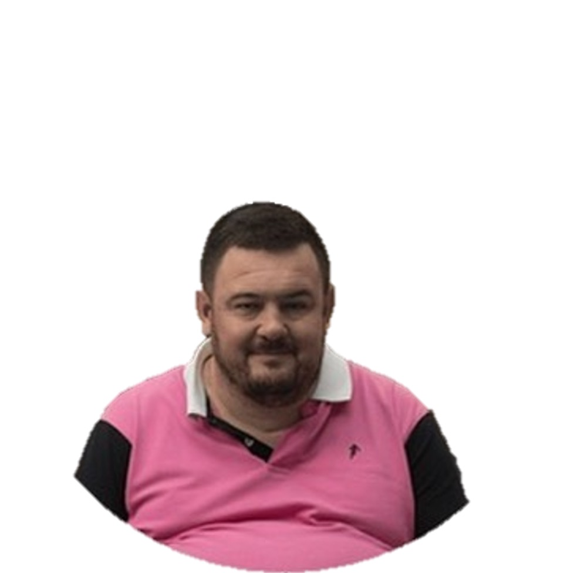

Bastien DAL LAGO
Développeur en formation — École 42
Objectif. Recherche stage de développement logiciel (C/C++, systèmes, algo) pour mettre en pratique les projets réalisés à l’École 42.
Compétences techniques
CC++ShellGit & GitHub
MakefileLinux / macOSValgrind
POOAlgorithmesStructures de données
Projets 42 (sélection)
minishell— parsing, redirections, pipes, exécutioncub3d— ray-casting 3D (C)so_long— jeu 2Dlibft,get_next_line,ft_printfC++ 00 → 09— templates, exceptions, STL…
Formation
- École 42 — Parcours logiciel (en cours)2024–2025
- Mastère CHEB2016–2017
- Ingénieur – ESB2012–2016
Expériences clés (avant 42)
- Ingénieur BE — Charpente Latapie2018–2024études, plans, coordination
Langues & plus
- Anglais — TOEIC 855
- Espagnol — intermédiaire
RugbyJeux de stratégieCinémaTech